Most likely forgeries.
Return To Catalogue - United States locals overview - Boyd City Express and Boyd's Dispatch - Broadway to Carters - United States
Note: on my website many of the
pictures can not be seen! They are of course present in the cd's;
contact me if you want to purchase them: evert@klaseboer.com.
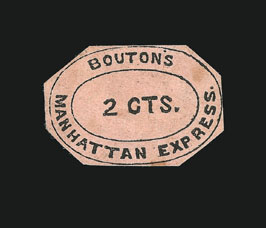
Only about 8 stamps exist of the Bouton's Manhattan Express, the colour is black on pink.
Most likely forgeries.
Forgery in the wrong color.
I think the next stamp is a bogus issue:
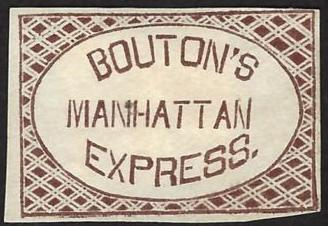
(Bouton's Manhattan Express, bogus? I have seen the same stamp in
red)
Bogus stamps with inscription 'BOUTON MANHATTAN EXPRESS' were issued by the forger Taylor:
Taylor forgeries, reduced sizes
(The two types, genuine)
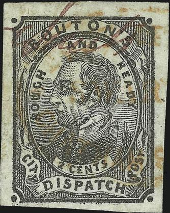
(Genuine, first one reduced size, images obtained from a Siegel
auction)
Two types of these stamps exist; with leaves in the corners and with dots in the corners. They were issued in 1848 in the colour black. I've seen "PAID" cancels in red on these stamps. I'm not quite sure if the all of the above stamps are genuine.
(Genuine stamp on envelope)
I've been told that this is a reprint.
Reprints made by Hussey:
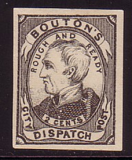
(Reduced sizes)
I have seen 'reprints' in the wrong colour and wrong size (about twice the genuine stamps), I have seen the following values: 2 c brown, 2 c red (even tete-beche!), 2 c red on red, 2 c orange, 2 c red on yellow and 2 c black.
If I'm well informed six different types of forgeries exist (most of them of the type with the dots in the corners), among the forgers are Scott and Taylor.
Wrong colour and wrong size
Forgery with shading pattern very abruptly ending at the level of
the nose.
Other forgeries:
(Genuine, image obtained from a Siegel auction)
There are only about 15 stamps known to exist of these stamps (see http://www.siegelauctions.com/1999/817/yf81795.htm#107 ). Probably forgeries or reprints:
Taylor forgery with no background lines behind '2 CTS':
Taylor also made bogus colours of these stamps (all in the value 2 c): black on grey, black on yellow and black on red.
Another forgery with solid background behind the "2
CTS", but now with slanting "E" in
"BOYCE" and different "S" behind this word.
The "2" has a strange left top part.
Yet another forgery with solid background, but with slightly
different lettering again.
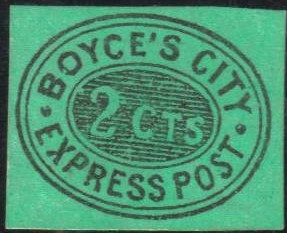
A forgery with a short left bottom side of the '2' and other
letters different from the genuine stamp. It was made by Moens
(or based on an illustration of his catalogue?).
For Boyd's local issues, click here
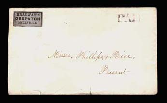
This stamp is very rare, it is printed in gold on lilac.
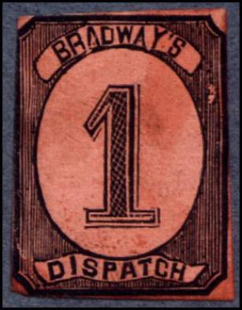
Bogus issue, numeral in an ellipes with inscription
"BRADWAY'S DISPATCH"; I've seen it in the colors black,
green, red, black on lilac.
Issued in 1857 in the colour red on yellow.
Image obtained from a Siegel auction
(Genuine, reduced size)
(Left, genuine? and right, forgery)
Forgeries, reprints:
Most likely a forgery
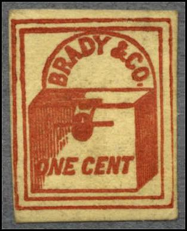
Probably a forgery, the stamp has a double outer frameline.
A 'reprint' made by Hussey.
Very similar (bogus?) design:
Letter box with inscription 'EXPRESS U.S. POST PAID 5'. I've seen
these labels in teh color brown on orange, brown on yellow and
brown on grey.
(1 c violet, left stamp is genuine)
Only one stamp was issued, the 1 c violet (it is not sure if these stamps has ever been genuinly used).
Forgery in brown, red, blue and green, note the badly done 'S' in
'POST'.
Yet another forgery, I've also seen this forgery in the color
red.
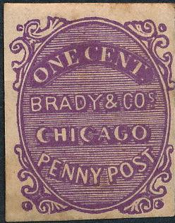
Forgery with "BRADY" too thin and all "O"s
too open.
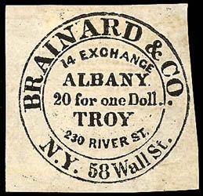
(Genuine stamps, reduced sizes)
A black and a blue stamp exist. Some forgeries:
Rather deceptive forgery. The "A"s of
"ALBANY" are broader than in the genuine stamp.
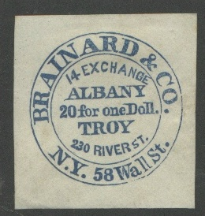
Forgery with the bottom of the '2' of '20' straight and with no
serif. The inscription "FOR ONE DOLL." is in capital
letters. I've also seen this forgery in the color black.
Forgery with "C" of "CO" more open and the
"1" of "14" rather close to the "A"
of "ALBANY".
I know that Hussey, Scott and Taylor made forgeries of these stamps. If anybody has more information, please contact me.
For more information on these stamps see: http://www.siegelauctions.com/1999/817/yf817115.htm#127.
(Genuine, reduced sizes, images obtained from a Siegel auction)
A black on yellow (only seven copies known to exist) and a black on blue stamp exist (only one copy known).
(Genuine, reduced sizes, images obtained from a Siegel auction)
A gold on yellow and a gold on black stamp exist. These stamps are also extremely rare. Probably forgeries or reprints:
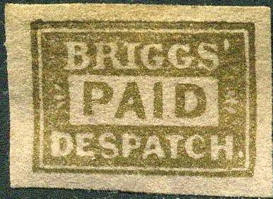
In my opinion, the white space with "PAID" is slightly
too small, it starts just after the beginning of the
"B" of "BRIGGS", while in the above genuine
stamps it starts just before this letter.
Some forgeries with very badly printed letters, for example the
"P" of "PAID" is very smeared.
{kind=link}
{kind=link}
{kind=link}
{kind=link}
{kind=link}
{kind=link}
{kind=link}
{kind=link}
{kind=link}